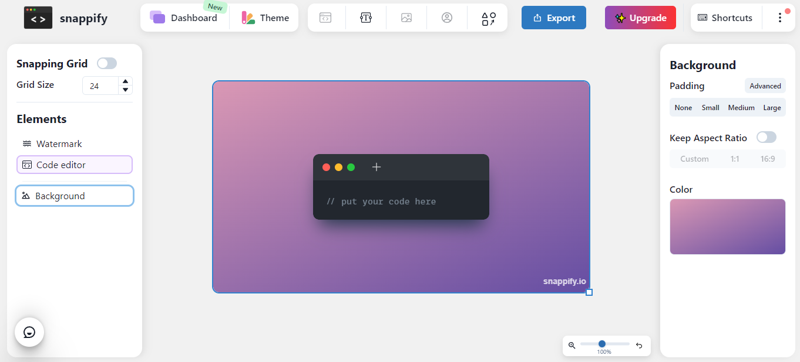
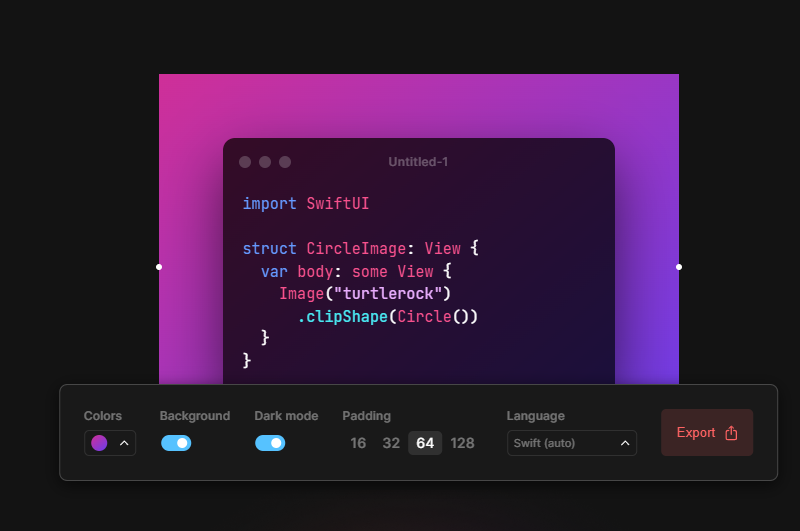
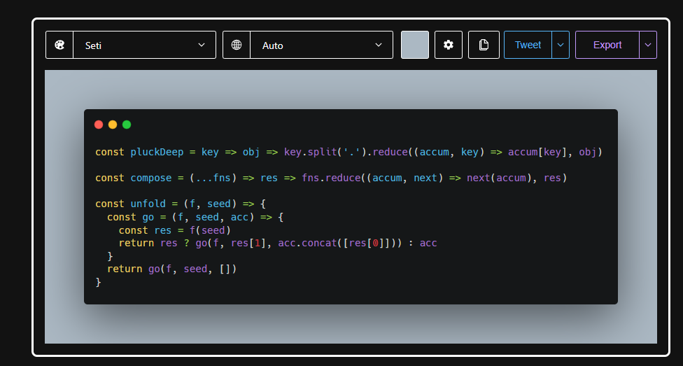

Los Snippets ayudan a los programadores a reducir el tiempo que se tarda en escribir informacion repetitiva durante la codificacion. Es por eso que aqui conoceras las mejores herramientas durante tu proceso como programador.
SNAPPIFY
Snappify.io es una herramienta que puede usar para crear hermosos fragmentos de código que se pueden compartir en Internet. Snappify funciona mejor con Twitter y su público objetivo actual está en Twitter. Es una excelente herramienta para cualquiera que quiera compartir algunos fragmentos cortos de código en las redes sociales o en un blog.
Configuración de fragmentos
Crear un fragmento es un proceso bastante fácil y directo. Puede elegir cómo se verá su fragmento. Primero elige el tamaño del relleno: ninguno, Pequeño, Medio, Grande. Entonces puede elegir la cantidad de zoom que desea aplicar. También elige el idioma en el que está escribiendo su fragmento, para que tenga el formato y el color adecuados. Puede elegir si desea mantener la relación de aspecto para Twitter, para que su imagen se vea genial. También tiene una opción si desea que su imagen tenga su información de perfil en la esquina izquierda. También puede cambiar el fondo: color sólido o degradado. Puede elegir temas para su editor e incluso, tienen modo claro y oscuro.
RAY SO
Ray.so Convierta su código en bellas imágenes. Elija entre una gama de colores de sintaxis, oculte o muestre el fondo y alterne entre una ventana oscura y clara. Use atajos de teclado para acelerar su proceso.
CARBON
Carbon.now.sh ¿Conoces todas esas capturas de pantalla de código que ves en Twitter? Aunque el código suele ser impresionante, vimos margen de mejora en el departamento estético. Carbon facilita la creación y el intercambio de bellas imágenes de su código fuente. ¿Entonces, Qué esperas? Ve a impresionar a todos tus seguidores con tu nueva destreza en el diseño.
Personalización
Una vez que tenga todo su código en Carbon, puede personalizar su imagen cambiando el tema de sintaxis, el color/imagen de fondo, el tema de la ventana o el relleno.